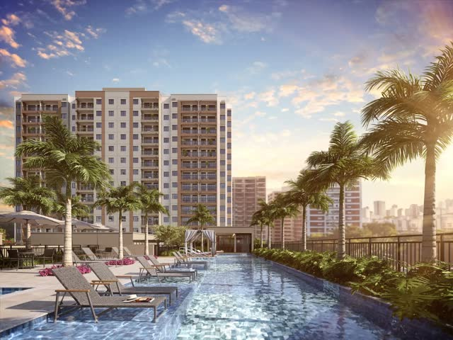
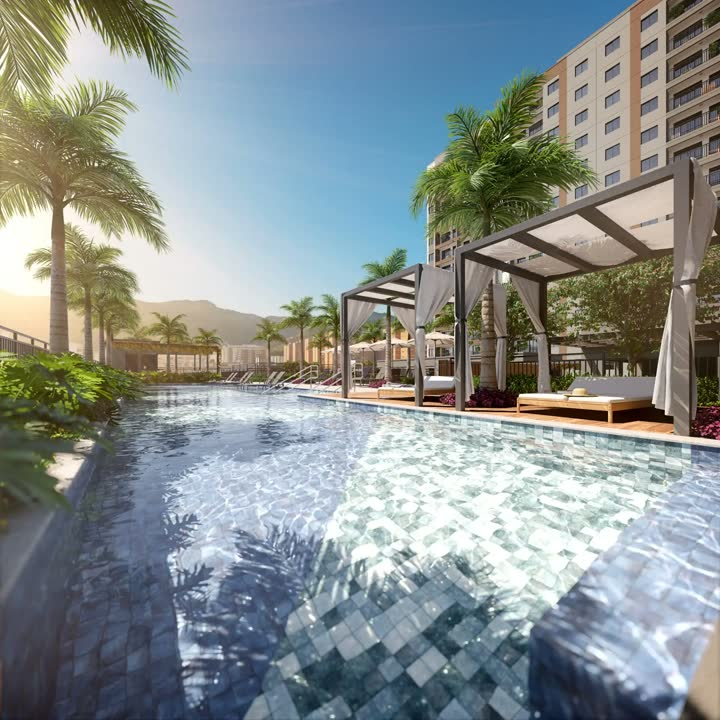
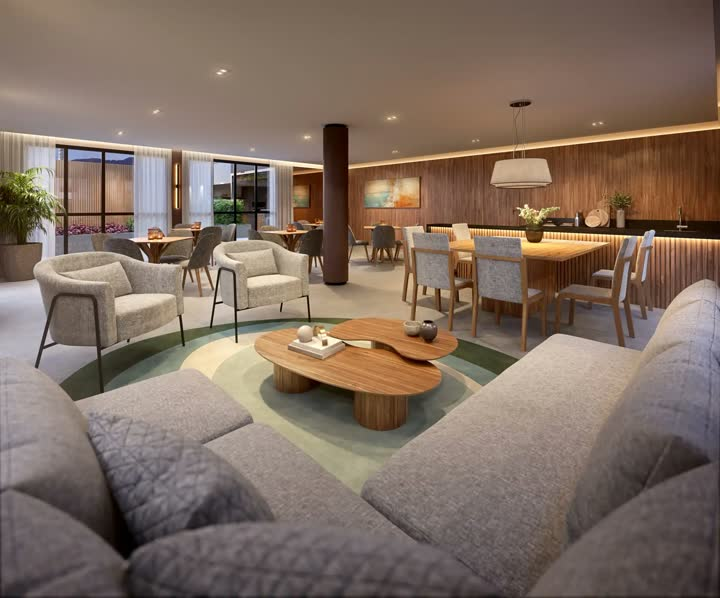
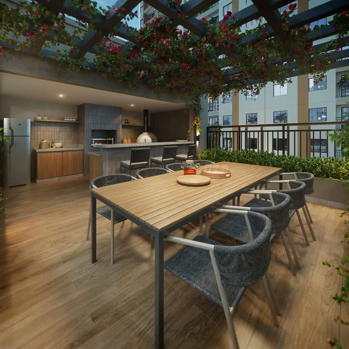
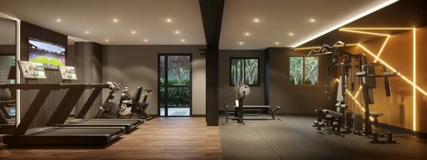
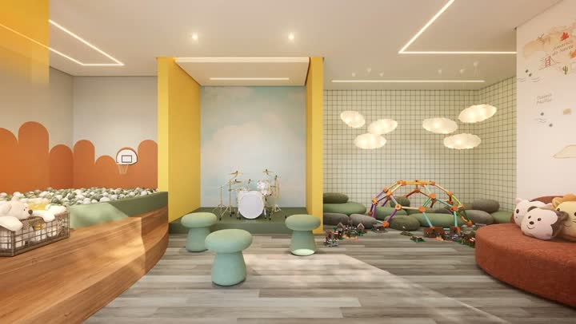

Fale com a Crisla e receba a simulação
Me conta sua renda e o que você paga de aluguel hoje: eu te mostro se o Renascença Residencial cabe no seu bolso, com os números do seu caso.
Simular agoraPara quem mora sozinho ou a dois e quer a Grande Tijuca: 2 quartos de 39 a 43 m² com lazer completo, a 1 minuto do shopping e perto do metrô, entre Tijuca, Grajaú e Vila Isabel.
Indicado para renda familiar a partir de R$ 8 mil.
*Entrega e valor de referência, sujeitos a alteração. Confirme sempre com a corretora.
Opções de planta: Garden 2 Quartos Ponta · Garden 2 Quartos Suíte Meio · Garden 2 Quartos Meio · Tipo 02 Quartos Ponta · Tipo 02 Quartos Suite Meio · Tipo 01 Quarto PcD · Tipo 02 Quartos Meio.






Imagens meramente ilustrativas.
1 min
3 min
10 min
12 min
14 min
8 min
15 min
15 min
Distâncias e tempos informados pela incorporadora. Rua Barão de São Francisco, 217, Andaraí, Rio de Janeiro.
Me conta sua renda e o que você paga de aluguel hoje: eu te mostro se o Renascença Residencial cabe no seu bolso, com os números do seu caso.
Simular agoraRua Barão de São Francisco, 217, Andaraí, Rio de Janeiro.
O empreendimento está em fase de lançamento. A Crisla confirma as condições e a previsão de entrega atualizadas.
Apartamentos de 2 quartos. A metragem de referência informada pela incorporadora é de 39 a 43 m²; a Crisla envia todas as plantas e metragens disponíveis.
Os valores e as condições variam conforme a unidade e a forma de pagamento. Chame a Crisla no WhatsApp para receber a tabela atualizada e uma simulação sem custo.
A Crisla indica o Renascença para renda familiar a partir de R$ 8 mil. Ela faz a simulação gratuita com os números do seu caso.